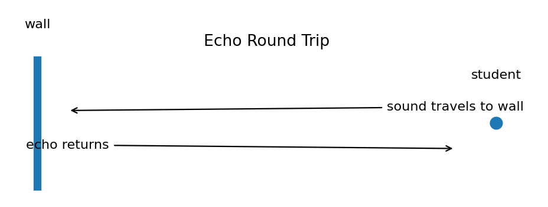

A hiker hears an echo $1.2\,\text{s}$ after shouting. Use $v=340\,\text{m/s}$ and $d=\frac{vt}{2}$ to find the distance to the cliff.
A clap echo returns in $0.40\,\text{s}$. Calculate the wall distance. Explain why the time is divided by 2.
A sound pulse returns from an underwater object after $2.0\,\text{s}$. If sound speed in water is $1500\,\text{m/s}$, find the object distance.
A bat receives an echo $0.06\,\text{s}$ after making a sound. Using $340\,\text{m/s}$, calculate the insect distance.
A student multiplies $340\,\text{m/s}$ by $0.50\,\text{s}$ and says a wall is $170\,\text{m}$ away. Explain the error and find the correct distance.
| Location | Echo time |
|---|---|
| A | 0.30 s |
| B | 0.90 s |
Using $340\,\text{m/s}$, find both distances and explain which surface is farther away.